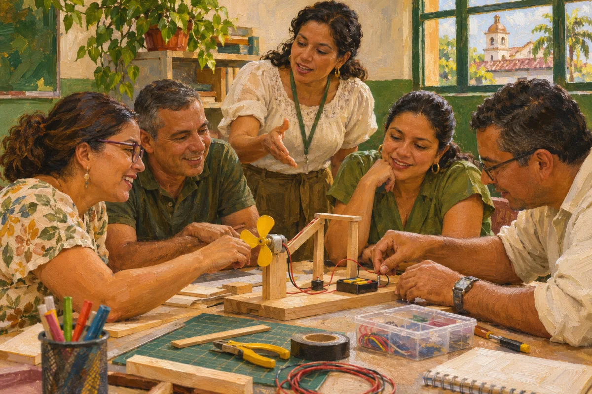

Conferencias y talleres
Para equipos docentes, instituciones y eventos del magisterio. La conferencia presenta un tema y abre la conversación; el taller lo trabaja con los docentes, a partir de su práctica.
Gratis para los afiliados al SUTEV de la Subdirectiva Cartago y de los municipios del nodo, y para sus familias. Municipios del nodo: Cartago, Ansermanuevo, Alcalá, Ulloa, El Águila, El Cairo, Argelia y Toro.

Temas de interés
Educación STEM+
Ciencia, tecnología, ingeniería, artes y matemáticas a partir de proyectos del territorio.
Pensamiento computacional
Resolver problemas como lo hace la computación, con computador y sin él.
El mercado de la atención
Las pantallas, las plataformas y la atención de los estudiantes.
Uso de la tecnología educativa
Criterios para elegir y usar plataformas, recursos y dispositivos en la escuela pública.
Elige el tema y el formato, y escribe por WhatsApp con el grupo al que va dirigido, el número de asistentes y la fecha que propones. Las conferencias y los talleres los orienta el secretario del CEID.
Formadores del CEID
Si eres docente afiliado y quieres orientar una conferencia o un taller con el CEID, escríbenos.